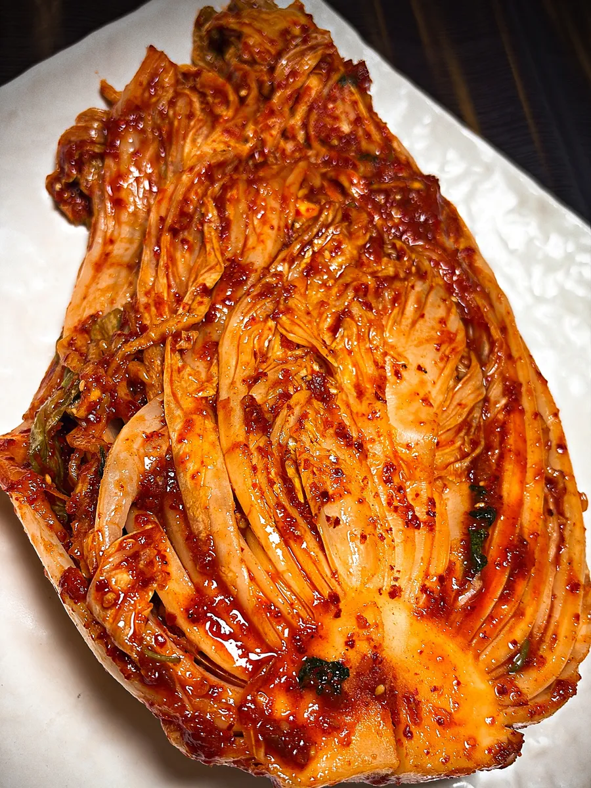
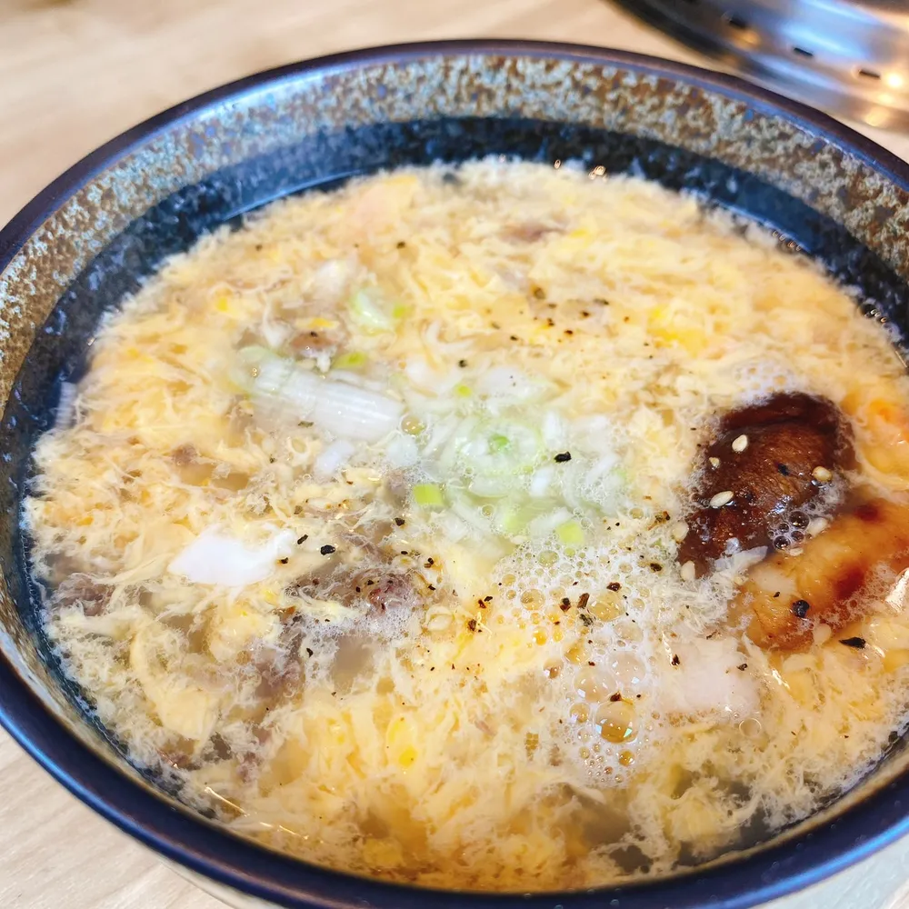
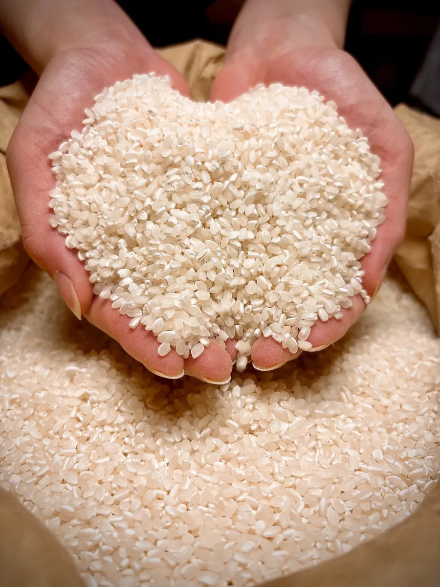
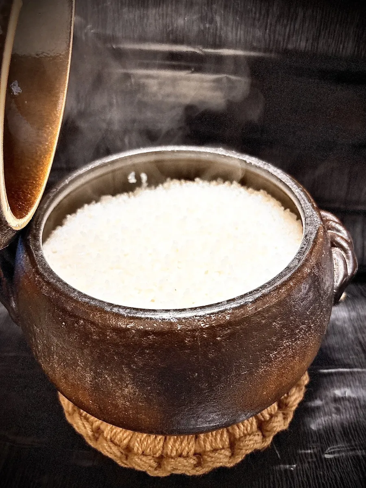

OUR KITCHEN · November 2026
Made in our kitchen: kimchi, sauces, soups and rice

Yakiniku is not only about the meat. At Yakiniku Tono, almost everything served alongside it — the kimchi, the sauces and the soups — is made from scratch in our own kitchen. Here is how.
Kimchi that takes several days
Our napa cabbage kimchi takes several days to make. The cabbage is salted and left for a day, then rinsed. We spread it with our own seasoning paste, made with many ingredients — including fish sauce and tiny salted shrimp for depth — and let it rest for several more days, so the flavor soaks all the way through.
Our other kimchi each have their own paste, also made from scratch, so every one tastes different.
Sauces made with plenty of fruit
Our sauces are made in our own kitchen. Every one uses plenty of fruit and is left to rest before we serve it.
Oxtail soup — winter only
In winter we serve oxtail soup, made from oxtail simmered for more than five hours.

Cold noodles, with a broth rested overnight
Our cold noodles are one of our most popular dishes. The broth is made from chicken and beef bones, simmered for about five hours and then left to rest overnight.

Koshihikari from a farmer in Kuwana
Our rice is Koshihikari grown in Kuwana, Mie, bought directly from a local farmer. Its gentle sweetness goes well with grilled meat and sauce.

Cooked in a Banko-ware clay pot
We cook the rice in a clay pot (donabe) of Banko ware from Yokkaichi, Mie. Banko ware is one of Japan’s designated Traditional Crafts, and Yokkaichi makes most of the clay pots produced in Japan. Cooking in a clay pot brings out the aroma of the rice.

Find them on the tablet
All of these are on our tablet menu, in English and Chinese with photos. To read about our beef, see Two wagyu brands, each at its best.